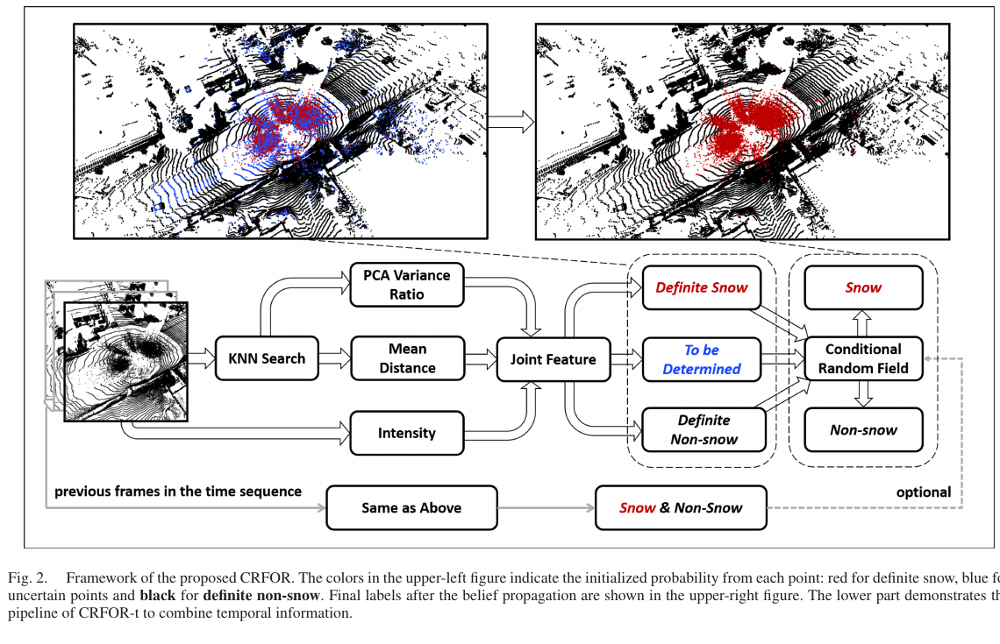
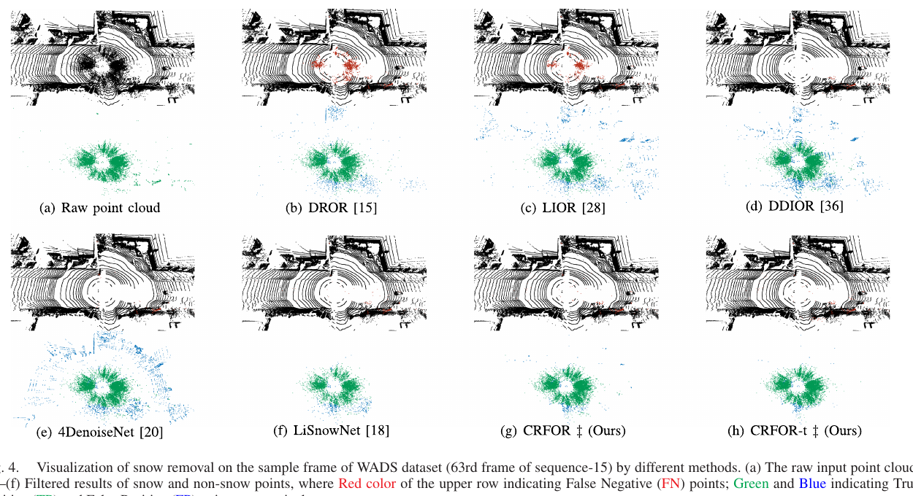

Robotics Research Reader · Stage 1
Snow Removal for LiDAR Point Clouds With Spatio-Temporal Conditional Random Fields
材料覆盖范围：完整阅读当前 PDF 的摘要、正文、图表、实验、限制与结论，并视觉核对本页嵌入的关键原图与表格裁剪。原文件为
离线交付说明：本报告采用 HTML + 同目录
Snow Removal for LiDAR Point Clouds With Spatio-Temporal Conditional Random Fields.pdf。本页严格限于 Stage 1：只还原论文故事线，不读取代码，不用第三方解读补写。离线交付说明：本报告采用 HTML + 同目录
images/ 的相对路径打包；移动或保存时需保留两者的相对目录结构。页面不依赖外部脚本、CDN 或远程字体。一、论文一句话在做什么
概括作者把雪点识别写成条件随机场（CRF）上的置信传播问题，以强度、密度与局部不规则度初始化标签，再用 ICM 从高置信邻居推断不确定点，并扩展为利用连续帧的 CRFOR-t。 （Abstract；Sec. I 末两段；Sec. III-A；PDF pp. 1–3）
二、Research Problem
具体问题：从雪天 LiDAR 扫描中去除雪花伪回波，同时保留真实结构点。 （Abstract；Sec. I 第 1 段；PDF p. 1）
场景：自动驾驶与机器人在强降雪下的 3D 感知。 （Abstract；Sec. I 第 1 段；PDF p. 1）
重要性：多数感知算法在干净点云上训练，雪噪声会破坏输入分布。 （Abstract；Sec. I 第 1 段；PDF p. 1）
后果：目标检测与跟踪性能下降，可能影响系统安全。 （Abstract；Sec. I 第 1 段；PDF p. 1）
三、Existing Methods & Gap
| 方法类别 | 原本怎么解决 | 作者指出的不足及影响 |
|---|---|---|
| SOR/ROR/DROR/DSOR | 依据邻域稀疏性判离群点 | 近远密度不均与暴雪中的密集雪会造成漏删或误删。 （Sec. II ‘Rule-based methods’；PDF p. 2） |
| LIOR/DDIOR | 加入强度先验 | 雪点与低反射真实点的强度重叠，单点阈值难平衡。 （Sec. II ‘Rule-based methods’；PDF p. 2） |
| WeatherNet/LiSnowNet/4DenoiseNet | 用学习模型或时序特征分类 | 需要标注、投影会损失 3D 信息，训练成本与泛化仍是问题。 （Sec. I 学习方法段；Sec. II ‘Learning-based methods’；PDF pp. 1–2） |
概括作者把统一缺口概括为：需要更有效地联合雪点的空间密度、强度以及邻点特征，而不是依赖单一逐点判据。 （Sec. I 第 2 段，句首 ‘Therefore, it is imperative…’；PDF p. 1）
四、Core Observation / Insight
- 原始观察
雪点通常呈低强度、低密度和高不规则度，但低强度真实点等反例使单一特征不足。原文依据
Fig. 1 展示空间聚集和强度分布；正文把三项先验定义为初始标签置信度。如何引出算法
概括把 intensity、mean distance 与 PCA minimum variance ratio 合成 joint feature F。 （Sec. I；Sec. III-A–B；Figs. 1–2；PDF pp. 1, 3） - 原始观察
雪点倾向靠近雪点，非雪点也倾向靠近非雪点。原文依据
作者在方法总览中把这一空间邻接规律作为构图依据。如何引出算法
概括在 kNN 图上建立 CRF，让确定点向不确定点传播 belief。 （Sec. III-A；Fig. 2；PDF p. 3） - 原始观察
连续帧可为当前帧提供额外邻域信息。原文依据
Fig. 2 下部和时序扩展小节给出历史帧合并流程。如何引出算法
概括将历史点配准到当前坐标系，形成 CRFOR-t。 （Sec. III-F；Fig. 2；PDF pp. 3, 5）
五、Method：只看宏观逻辑
做了什么：输入单帧或连续帧雪天点云，并把去雪写成逐点标签推断。
为什么：作者需要同时保留真实结构点并识别雪点。 （Sec. III-A；Fig. 2；PDF p. 3）
为什么：作者需要同时保留真实结构点并识别雪点。 （Sec. III-A；Fig. 2；PDF p. 3）
做了什么：计算 intensity、mean distance 和 irregularity，并归一化为 joint feature F。
为什么：三项特征分别提供物理、局部密度和几何规则性线索，联合后作为初始置信度。 （Sec. III-B；Eq. (1)；Fig. 2；PDF p. 3）
为什么：三项特征分别提供物理、局部密度和几何规则性线索，联合后作为初始置信度。 （Sec. III-B；Eq. (1)；Fig. 2；PDF p. 3）
做了什么：把点初始化为 definite snow、definite non-snow 或 uncertain，并构造 kNN-CRF。
为什么：硬阈值难处理置信度接近零的点，邻域标签关系可提供额外证据。 （Sec. III-A、III-C–D；Fig. 2；PDF pp. 3–4）
为什么：硬阈值难处理置信度接近零的点，邻域标签关系可提供额外证据。 （Sec. III-A、III-C–D；Fig. 2；PDF pp. 3–4）
做了什么：用 ICM 更新 uncertain 点；CRFOR-t 先将历史帧变换到当前坐标系再并入图。
为什么：ICM用于近似求解 CRF 标签；时序邻域用于补充单帧证据。 （Sec. III-E–F；Algorithm 1；PDF pp. 4–5）
为什么：ICM用于近似求解 CRF 标签；时序邻域用于补充单帧证据。 （Sec. III-E–F；Algorithm 1；PDF pp. 4–5）
做了什么：输出雪/非雪标签与去雪点云。
为什么：这是后续点云感知使用的预处理结果。 （Sec. III-E–F；PDF pp. 4–5）
为什么：这是后续点云感知使用的预处理结果。 （Sec. III-E–F；PDF pp. 4–5）

概括核心变化是把单次二值阈值判断改为 joint feature 初始化后的 CRF belief propagation，并可把连续帧纳入同一推断。 （Sec. III-A–F；Fig. 2；PDF pp. 3–5）
六、Contributions
- 提出基于 CRF 的 CRFOR，把空间、物理特征与邻接关系统一到概率图模型。 （Sec. I ‘In summary, our contributions are as follows’；PDF p. 2） 类别：Method
- 实现空间版与时空版 CRFOR-t，并用 ICM 做置信传播。 （Sec. I ‘In summary, our contributions are as follows’；PDF p. 2） 类别：Method
- 在真实 WADS 雪天数据上与规则法及学习法比较，并展示对 3D 检测的潜在帮助。 （Sec. I ‘In summary, our contributions are as follows’；PDF p. 2） 类别：Experiment
七、Experiments
| Dataset | WADS；每个序列 100 帧，统一测试 10 个序列。 （Sec. IV-A；Table III；PDF pp. 5–7） |
|---|---|
| 与哪些方法比较 | DROR、LIOR、DDIOR、LiSnowNet、4DenoiseNet。 （Sec. IV-A；PDF p. 6） |
| 评价指标 | Precision、Recall、F1-score 和 runtime。 （Sec. IV-B；PDF p. 6） |
| 硬件/实验环境 | Python；Intel Core i7-12700H laptop。 （Sec. IV-A；PDF p. 6） |
| 是否有消融实验 | 有；针对 CRF 与 intensity/density/irregularity。 （Sec. IV-D；Table IV；PDF pp. 6–7） |
| 是否有参数实验 | 论文未明确说明论文未单列参数敏感性实验。 （Sec. IV；PDF pp. 5–7） |
| 是否有定性实验 | 有；去雪可视化和一个 SECOND 检测案例。 （Sec. IV-C、IV-E；Figs. 4–5；PDF p. 7） |
| 是否有定量实验 | 有；平均、逐序列和消融结果。 （Sec. IV-B、IV-D；Tables II–IV；PDF pp. 6–7） |

实验
WADS 定量比较
结果Table II 中 CRFOR 的 F1 高于全部规则基线，CRFOR-t 进一步提高。
作者据此得出的结论作者将 CRFOR-t 的额外增益归因于时空策略。
来源Sec. IV-B；Table II；PDF p. 6
实验
示例帧去雪可视化
结果Fig. 4 中 CRFOR/CRFOR-t 保留更多非雪点并识别更多雪点；仍可见稀疏雪点漏保留和低密度真实点误删。
作者据此得出的结论作者认为其 precision–recall 平衡优于所比方法，同时明确承认上述残余错误。
来源Sec. IV-C；Fig. 4；PDF pp. 6–7
实验
组件消融
结果移除 CRF 时性能显著下降；同时移除 density 与 irregularity 的下降大于仅移除其中之一。
作者据此得出的结论作者据此认为 CRF 和联合特征均发挥作用。
来源Sec. IV-D；Table IV；PDF pp. 6–7
实验
下游 3D 检测案例
结果Fig. 5 中，去雪后纠正了示例中的部分误检和漏检。
作者据此得出的结论作者只把它作为潜在实用性的定性例子，并说明检测器自身错误不一定能由去雪修复。
来源Sec. IV-E；Fig. 5；PDF pp. 6–7
八、Limitations
作者明确承认的 limitation
作者明确指出：仍会保留稀疏雪点、误删低密度非雪点；irregularity 约占运行时间的三分之二；检测器自身造成的错误不一定能由去雪修复。 （Sec. IV-C–E；Figs. 4–5；PDF pp. 6–7）
从实验结果中直接可见，但作者没有明确称为 limitation 的现象
直接观察主要逐点定量验证集中在 WADS；下游检测只提供一个定性案例。 （Tables II–IV；Fig. 5；PDF pp. 6–7）
九、Future Work / Research Implications
论文未明确说明论文未明确提出后续研究计划；仅指出 irregularity 计算可能通过并行进一步加速。 （Sec. IV-D；Sec. V；PDF pp. 6–7）
十、论文逻辑链
概括现实问题：雪花回波污染 LiDAR 并损害检测与跟踪。 （Sec. I 第 1 段；PDF p. 1）
概括现有方法：使用邻域/强度规则或投影后的学习模型。 （Sec. I–II；PDF pp. 1–2）
概括不足：单一线索难兼顾雪点删除与真实点保留，学习法还有投影、标注和 domain gap。 （Sec. I；Sec. II；PDF pp. 1–2）
概括观察：雪与非雪点具有可联合的物理/空间特征和局部标签一致性。 （Sec. I；Sec. III-A–B；Figs. 1–2；PDF pp. 1, 3）
概括思想：将逐点硬判断改为图上的置信传播。 （Sec. I；Sec. III-A；PDF pp. 1–3）
概括方法：joint feature 初始化、kNN-CRF、ICM，以及连续帧扩展。 （Sec. III-A–F；Fig. 2；PDF pp. 3–5）
概括验证：WADS 定量、逐序列、消融、去雪可视化和检测案例。 （Sec. IV；Tables II–IV；Figs. 4–5；PDF pp. 5–7）
概括结论：作者报告 CRFOR，特别是 CRFOR-t，在所比方法中取得更好的综合去雪表现。 （Sec. V；PDF p. 7）
十一、第一遍阅读结束后，我应该记住的东西
- 概括解决雪天 LiDAR 雪点删除与真实结构保留之间的冲突。 （Sec. I 第 1 段；PDF p. 1）
- 概括核心 gap 是逐点硬阈值难处理密集雪与稀疏真实点。 （Sec. I；Sec. II；PDF pp. 1–2）
- 概括最关键 insight 是邻接点标签具有局部一致性，可由高置信点帮助不确定点。 （Sec. I；Sec. III-A–B；Figs. 1–2；PDF pp. 1, 3）
- 概括核心变化是把去雪写成 CRF 置信传播，而非一次性二值过滤。 （Sec. III-A–F；Fig. 2；PDF pp. 3–5）
- 概括最重要结果是 CRFOR-t 在 WADS 上取得论文报告的最佳 F1，并由消融支持 CRF 的作用。 （Sec. V；PDF p. 7）
十二、暂时不要深入的内容
- 概括联合特征 F 的尺度、常数 a/b/c 与阈值选择（Eq. 1、9）。
- 概括CRF 势函数、条件概率和 ICM 更新（Eq. 4–11，Algorithm 1）。
- 概括CRFOR-t 的配准与历史帧窗口 m（Sec. III-F）。
- 概括Table II–IV 的精确数值和各序列差异。